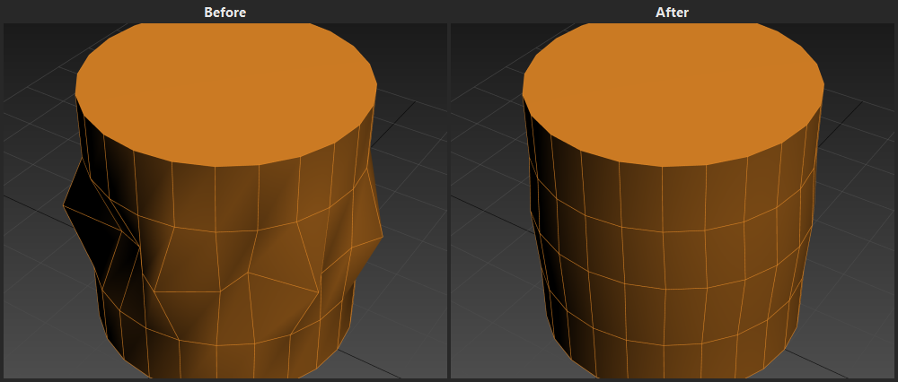
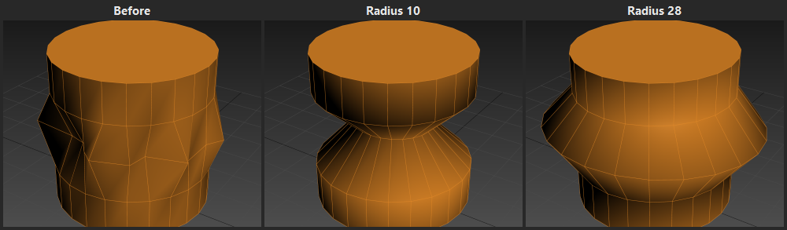
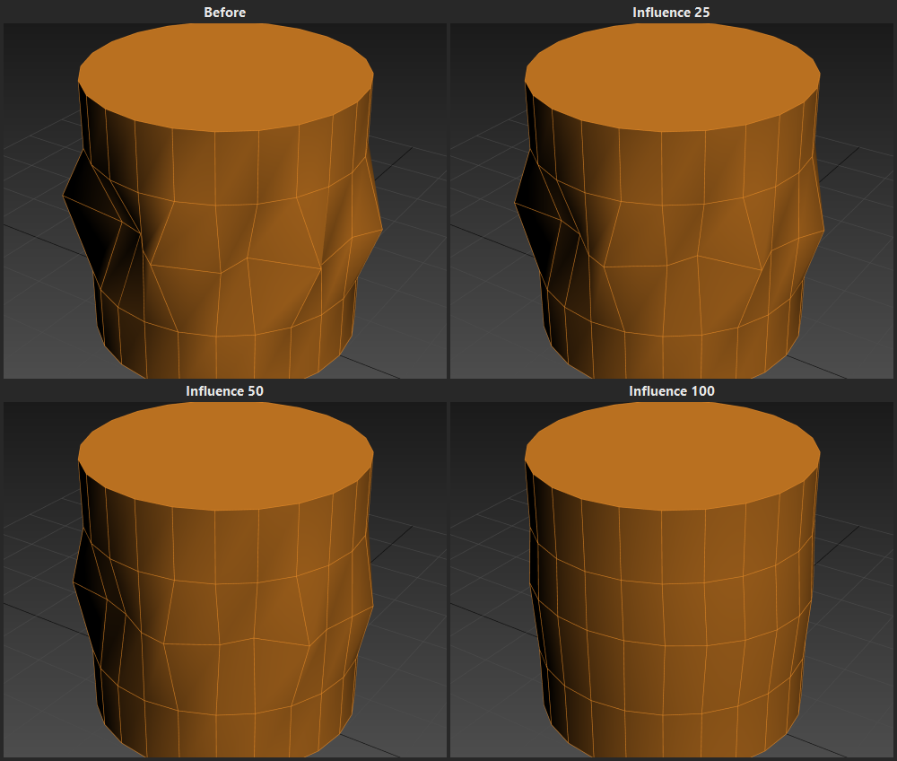
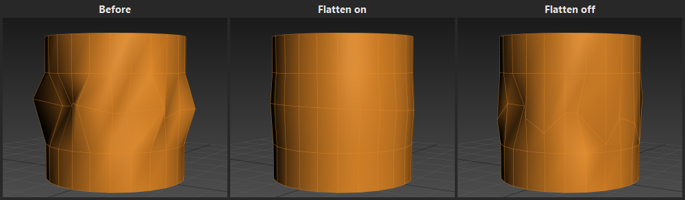
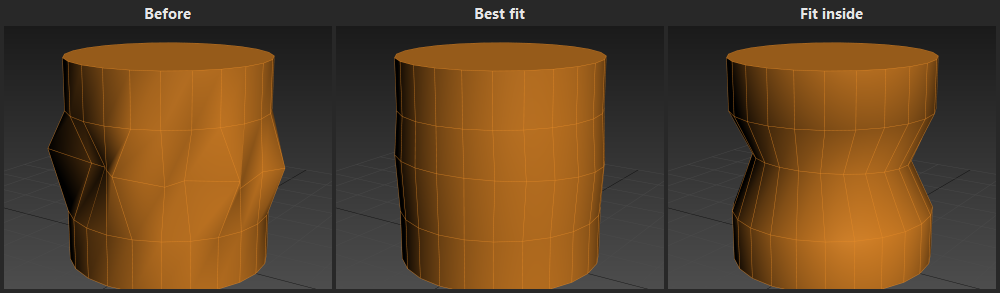
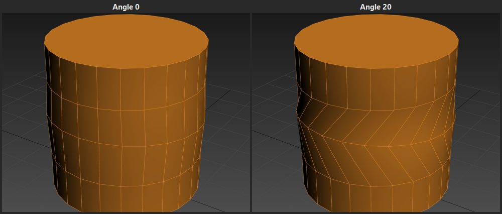

Circle
Turns a loop into an even, flat circle.
What it does
Circle takes a loop of vertices, even a square hole in a grid, and rounds it into a circle that stays centred, flat and does not twist the surrounding faces. It can work on several separate loops at once.

How to use it
- Open an Editable Poly (or an Edit Poly modifier) in the Modify panel and go to a sub-object level. Select a loop of edges, or the faces round a hole.
- Right-click in the viewport and choose LoopTools9000, then the tool. The submenu is the first item in the lower-left part of the menu, and only shows at sub-object level.
- The tool runs at once with the settings you used last, and a settings box opens in the viewport. Change a setting and the result updates live.
- Press OK to keep it, Cancel to go back to the original shape, or Apply to keep it and run the tool again on top of the result.
Options
| Option | What it does |
|---|---|
| Method | Best fit uses the average size of the loop. Fit inside only moves vertices inwards. |
| Flatten | Puts the loop on a flat plane (on by default). |
| Radius | Switch it on to force a radius of your own instead of the loop's size. |
| Regular | Spaces the vertices evenly round the circle (on by default). |
| Angle | Turns the circle round its centre, in degrees. |
| Lock X / Y / Z | Stops vertices from moving along that axis. |
| Influence | How much of the result is applied, from 0 to 100 %. 100 % is the full effect. |





Good to know
- With Regular off, each vertex keeps its own angle round the centre.
- At polygon or element level the border of the selection becomes the circle, and the vertices inside are flattened with it.
- Fit inside is useful when the circle must stay within the original opening.
- Keeping the result is one undo step.
- Your settings are remembered for next time.
- It works on Editable Poly and on the Edit Poly modifier.